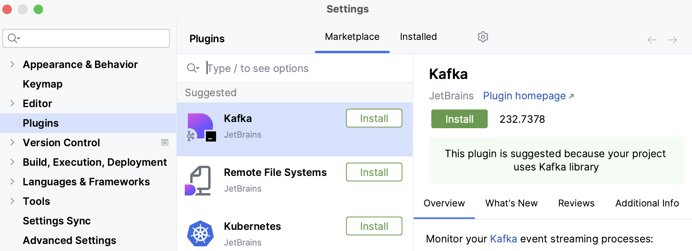
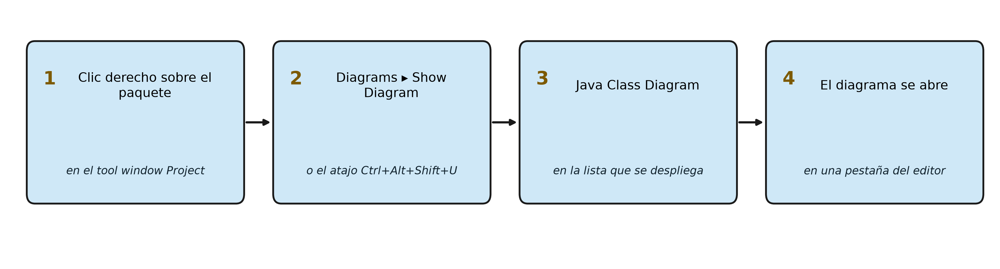

Diagramas de clases en IntelliJ IDEA
Ya sabemos leer un diagrama de clases y escribir con sus símbolos, pero todavía no hemos visto de dónde sale uno. Empezamos por la vía que da el propio entorno de desarrollo, porque es la que se tiene siempre a mano: IntelliJ IDEA, el IDE con el que ya hemos trabajado en el apartado de entornos, es capaz de generar el diagrama de clases a partir del código de un proyecto y de mantenerlo al día cuando ese código cambia.
Eso define el uso que se hace del diagrama. Un diagrama generado por el IDE sirve para entender lo que ya está programado y para comprobar que el modelo sigue siendo cierto; no sirve para anticipar un diseño que todavía no existe, porque no hay nada que leer. Las dos cosas son necesarias en un proyecto real, y por eso conviene saber hacer las dos.
El módulo Diagrams
La funcionalidad de diagramas no está en el editor de código, sino en un módulo del IDE llamado Diagrams. Comprobar que está operativo es el primer paso, y también es la parte del procedimiento que exige un criterio de evaluación.
Ctrl+Alt+S abre la ventana de Settings. En la sección Plugins, la pestaña Installed lista todo lo que el entorno tiene incorporado, y ahí debe aparecer Diagrams con su casilla marcada. El módulo viene incluido en la instalación y activado por defecto, así que lo normal es encontrarlo ya listo; lo que hay que hacer es verificarlo, no descubrirlo.
Ahora bien, que el módulo figure en la lista no garantiza que la función esté disponible, y este es el punto que hay que entender antes de perder una tarde buscando un menú que no aparece. La generación de diagramas de clases forma parte del conjunto de funciones que JetBrains reserva a la suscripción Ultimate, de modo que en una instalación sin suscripción el módulo puede estar presente y, aun así, no ofrecer los diagramas de Java. Las dos cosas se comprueban en el mismo sitio: el módulo en la pestaña Installed y la función en el menú contextual del paquete.

En la captura se ve la ventana de Settings con la sección Plugins seleccionada a la izquierda y sus dos pestañas en la parte superior. La pestaña Installed es la que interesa aquí, y la Marketplace es la que se usará más abajo para instalar un complemento que no venga de serie. La lectura del panel del complemento seleccionado da la información relevante: el autor, la versión y los botones de acción.
Si el módulo Diagrams no aparece en la lista, o si aparece pero el menú de diagramas no se ofrece después en el menú contextual, la causa es la licencia y no una mala instalación. Y aquí conviene saber que no hace falta pagar para nada de lo que se hace en este módulo, porque JetBrains ofrece dos vías gratuitas que desbloquean el conjunto completo de funciones:
- La licencia educativa, dirigida a estudiantes y a profesorado, que se solicita en la web de JetBrains acreditando la condición de alumno o de docente con el correo del centro. Es la vía oficial para un aula y la que conviene usar.
- La licencia de uso no comercial, que también desbloquea todas las funciones y que tiene como única contrapartida la aceptación del envío de estadísticas de uso anónimas.
En los dos casos el resultado es el mismo módulo, el mismo menú y el mismo diagrama. Lo único que hay que tener claro es que el módulo no es software libre: es código propiedad de JetBrains, incluido en una aplicación que se distribuye con licencia propia. Si eso supone un problema, la sección final de esta página describe una alternativa que no depende de ninguna licencia.
Conviene entender además qué se está haciendo al activar un módulo, más allá del trámite administrativo. El IDE es un programa que va cargando piezas según lo que necesita, y esas piezas comparten el mismo modelo interno del proyecto. Por eso un complemento puede añadir un menú nuevo sin que haya que tocar el código ni la configuración: el módulo se engancha a la estructura que el IDE ya tiene indexada. De ahí que si la pieza responsable de los diagramas no está activa, el IDE se comporte como si la funcionalidad no existiera, sin ningún mensaje de error y sin ninguna pista de por qué falta el menú.
Generar el diagrama desde el código
Con el módulo en marcha, el procedimiento es corto: en el tool window Project se pulsa con el botón derecho sobre el paquete del que se quiere el diagrama y se escoge Diagrams | Show Diagram, cuyo atajo es Ctrl+Alt+Shift+U. En la lista que aparece se selecciona Java Class Diagram, y el diagrama se abre en una pestaña nueva del editor.

El esquema anterior resume la ruta completa, con los nombres exactos que aparecen en pantalla. Se pulsa siempre sobre un paquete y no sobre una clase suelta, porque lo que el IDE dibuja es el contenido del paquete; si lo que se quiere es el diagrama de una sola clase, lo más rápido suele ser generar el del paquete y quedarse con la parte que interesa.
En ese instante el IDE dibuja un diagrama de clases completo del paquete, con sus relaciones y sus dependencias. Merece la pena detenerse en cómo se ha obtenido, porque es la diferencia esencial con respecto a una herramienta de dibujo: aquí nadie ha dibujado nada. El entorno ya tenía analizado el proyecto para ofrecer autocompletado y navegación, y el módulo de diagramas se limita a volcar ese mismo conocimiento sobre un lienzo. El resultado no es una interpretación del código, sino el código mismo visto desde otra perspectiva, y por eso refleja siempre la estructura real de clases y de métodos, incluidas las erratas del programador.
Ese mecanismo es exactamente la ingeniería inversa, con la diferencia de que aquí no hay que exportar nada: el diagrama se obtiene del proyecto que está abierto en ese momento.
Si falta alguna clase en el diagrama, se puede añadir sin volver a generarlo. Con el editor del diagrama en primer plano se pulsa Espacio, se empieza a escribir el nombre de la clase y se escoge de la lista de sugerencias; si la clase está fuera del proyecto, hay que marcar antes la casilla Include non-project items. La otra vía es seleccionar los elementos en el tool window Project y arrastrarlos hasta el diagrama.
Existe, además, una variante muy útil cuando el proyecto está bajo control de versiones. La opción VCS | Uncommitted Changes | Show Local Changes as UML, con atajo Ctrl+Alt+Shift+D, dibuja un diagrama con las clases que todavía no se han confirmado. En lugar de revisar un listado de archivos modificados, se revisa la forma que ha tomado el cambio, que es mucho más informativo cuando se trabaja en equipo.
Leer y configurar el diagrama
Un diagrama de un paquete real suele ser grande, y el editor incorpora herramientas para podarlo. La primera es el botón Show Dependencies de la barra del diagrama: al activarlo, el IDE dibuja las relaciones entre las clases siguiendo las convenciones de UML, de modo que una flecha con punta triangular indica herencia y una línea discontinua indica dependencia. La segunda es el botón Change Visibility Level, que decide qué miembros se muestran: si se elige protected, aparecen los miembros con visibilidad igual o mayor que esa, cada uno con su icono de acceso correspondiente.
Otras dos ayudas ahorran mucho tiempo en diagramas grandes. Al pulsar Ctrl+F12 se despliega la lista de elementos del diagrama, lo que permite saltar de uno a otro sin buscarlos con la vista. Y al ir pinchando en las clases, el IDE atenúa en gris las que no pertenecen al paquete que se está explorando, de forma que el foco visual se mantiene donde interesa. En el panel izquierdo, el botón Structure abre una ventana con un mapa completo del diagrama y una vista previa del bloque seleccionado, con opciones para ampliar, desplazar y cambiar la disposición.
Cuando el diagrama es inmanejable, el grupo de acciones Analyze Graph del menú contextual ofrece la salida. Focus on Node Neighborhood deja a la vista solo el nodo seleccionado y sus vecinos, y Focus On Paths Between Two Nodes muestra únicamente los caminos que conectan dos clases concretas, que es la forma más rápida de responder a la pregunta de cómo llega un objeto a otro. Measure Centrality va un paso más allá y calcula un valor entre 0 y 1 para cada nodo según su importancia en la red de dependencias, de modo que los nodos más brillantes señalan las clases de las que cuelga el resto del sistema. Ese dato es oro al planificar una refactorización, porque identifica exactamente las piezas que no se pueden tocar sin arrastrar medio proyecto.
Queda por mencionar la configuración por defecto. En Ctrl+Alt+S y luego Tools | Diagrams se decide qué elementos aparecen y cómo se disponen cada vez que se genera un diagrama, de forma que no haya que ajustarlo a mano en cada ocasión.
Del diagrama al código
El editor de diagramas de IntelliJ no es un visor, sino un editor del modelo, y permite también trabajar en el sentido contrario: crear estructura de código desde el dibujo. Es la forma de cubrir la generación de código a partir de un diagrama sin salir del IDE, aunque su alcance sea incremental: no genera un proyecto entero de una vez, sino que va escribiendo en el código cada elemento que se añade al diagrama.
Con el botón derecho sobre el lienzo, la opción Content | New abre un submenú para crear un elemento nuevo (una clase, un método, un campo) y, tras pedir los datos necesarios, lo añade a la vez al diagrama y al árbol del proyecto.
El caso más interesante es el botón Edge Creation mode de la barra del diagrama. Activa el modo de trazado de relaciones y, al dibujar un enlace entre dos elementos, IntelliJ modifica el código fuente en consecuencia: si la relación es una asociación, crea el atributo correspondiente; si es una herencia, añade el extends. Eso significa que se puede trabajar sobre el dibujo y ver cómo el programa cambia debajo, que es la forma más directa de entender qué significa cada símbolo del diagrama de clases. De la misma manera, borrar un enlace o un nodo del diagrama ofrece la opción de borrar también su reflejo en el código, y las acciones Show Implementations (Ctrl+Alt+B) y Show Parents (Ctrl+Alt+P) permiten saltar de un elemento a sus implementaciones o a sus clases madre.
Esa bidireccionalidad tiene una consecuencia importante. En una herramienta de dibujo como la que veremos en la página siguiente, el modelo y el código son dos artefactos separados que hay que mantener sincronizados a mano, y por eso hay que regenerar y revisar diferencias cada vez que uno de los dos cambia. En IntelliJ solo existe el código: el diagrama es una vista de él, así que no pueden divergir. La contrapartida es que tampoco sirve para diseñar algo que todavía no existe, porque no hay nada que leer.
Exportar el diagrama
Un diagrama que solo existe dentro del IDE no se puede entregar, así que el último paso de cualquier sesión de trabajo es sacarlo de ahí. Se pulsa con el botón derecho sobre el editor del diagrama y se escoge Export Diagram | Export to File, eligiendo a continuación la extensión del archivo.
La elección del formato no es indiferente y conviene decidirla según el destino. SVG guarda el diagrama como gráfico vectorial, de modo que se puede ampliar sin que se pixele y sigue viéndose nítido al imprimirlo en papel o al proyectarlo en clase; es la opción recomendada cuando el diagrama va a acabar dentro de una memoria técnica. PNG genera un mapa de bits, más cómodo de pegar en un procesador de textos o en una presentación, pero con una resolución fija: si se amplía, se ve borroso.
Antes de exportar merece la pena dedicar un minuto a dejar el diagrama legible, porque la imagen no va a llevar ninguna explicación al lado. Conviene comprobar que la visibilidad de los miembros está en el nivel adecuado, porque mostrar todos los métodos privados de veinte clases convierte el diagrama en una lista ilegible; que los nodos están repartidos de forma que las líneas no se crucen sin necesidad; y que se han usado las herramientas de filtrado del apartado anterior para quedarse solo con la parte del modelo que se quiere enseñar. Un diagrama exportado sin ese repaso suele ser correcto y, a la vez, inservible.
La alternativa sin licencia: PlantUML Integration
Cuando no se quiere depender de ninguna licencia, el hueco se cubre con PlantUML Integration, un complemento del Marketplace que se distribuye con licencia Apache 2.0, es decir, software libre, y que funciona sin ninguna suscripción. Su mecanismo es distinto al del módulo de JetBrains: en lugar de generar el diagrama leyendo el proyecto, interpreta un archivo de texto escrito en el lenguaje PlantUML y lo dibuja en un panel de previsualización junto al editor.
Ese cambio de mecanismo tiene una consecuencia importante para nosotros, y es que cubre todos los diagramas del bloque de modelado: clases, objetos, secuencias, casos de uso, actividades y estados. Instalarlo una vez sirve para este apartado y también para el de comportamiento, lo que lo convierte en la opción más rentable cuando el objetivo es que ningún alumno se quede fuera por una licencia.
El procedimiento es el habitual de cualquier complemento: Ctrl+Alt+S → Plugins → pestaña Marketplace → buscar PlantUML Integration → Install y reiniciar el entorno si lo pide. Después basta con crear un archivo con extensión .puml, escribir el diagrama entre las etiquetas @startuml y @enduml, y verlo dibujado al lado del código. Hay un requisito que conviene conocer de antemano porque es la causa del error más habitual: muchos tipos de diagrama necesitan el programa Graphviz instalado en el sistema, que es libre y se instala con un comando en Linux y macOS.
La ventaja de este enfoque, además de la licencia, es la que ya nos encontramos en el apartado de control de versiones: un archivo .puml es texto plano, de modo que Git puede compararlo línea a línea y una modificación en la relación entre dos clases aparece como una línea eliminada y otra añadida. Un diagrama guardado como imagen no permite eso.
Merece la pena, por tanto, hacer una distinción que ayuda a elegir: el módulo de JetBrains dibuja lo que el código ya dice, y PlantUML dibuja lo que nosotros escribimos. El primero es una vista del proyecto y no puede contradecirlo; el segundo es un documento y puede quedarse desactualizado, pero también puede describir un diseño que todavía no existe.
El otro sentido del trabajo
Con esto queda recorrido el camino que va del código al diagrama. Queda el inverso, el del diseño: decidir qué clases habrá, cómo se llamarán y cómo se relacionarán antes de que exista el programa, y obtener después el esqueleto del código a partir del modelo. Para ese camino hace falta una herramienta donde dibujar sea cómodo y donde el diagrama sea un documento en sí mismo, y es lo que se trabaja en la página siguiente.
Lo que no funciona es quedarse con una sola de las dos vías. Un diagrama que solo existe en un archivo aparte se queda obsoleto en cuanto el código avanza, y un diagrama generado por el IDE no puede anticipar un diseño que todavía no se ha escrito.